Liu, Y., Wang, Y., Zhang, Y., Liu, T., Jia, H., Zou, H., ... & Wang, F. (2016). Rational Design of Dual Agonist-Antibody Fusions as Long-acting Therapeutic Hormones. ACS Chemical Biology, 11(11), 2991-2995.
Liu, T., Wang, Y., Luo, X., Li, J., Reed, S. A., Xiao, H., ... & Schultz, P. G. (2016). Enhancing protein stability with extended disulfide bonds. Proceedings of the National Academy of Sciences of the United States of America, 113(21), 5910-5915.
Luo, X., Zambaldo, C., Liu, T., Zhang, Y., Xuan, W., Wang, C., ... & Young, T. S. (2016). Recombinant thiopeptides containing noncanonical amino acids. Proceedings of the National Academy of Sciences of the United States of America, 113(13), 3615-3620.
Luo, X.#, Liu, T.#, Wang, Y., Jia, H., Zhang, Y., Caballero, D., ... & Wang, F. (2015). An Epitope‐Specific Respiratory Syncytial Virus Vaccine Based on an Antibody Scaffold. Angewandte Chemie International Edition., 54(48), 14531-14534.
Liu, T.#, Du, J.#, Luo, X., Schultz, P. G., & Wang, F. (2015). Homogeneously modified immunoglobulin domains for therapeutic application. Current Opinion in Chemical Biology, 28(28), 66-74.
Xiao, H., Xuan, W., Shao, S., Liu, T., & Schultz, P. G. (2015). Genetic Incorporation of ε-N-2-Hydroxyisobutyryl-lysine into Recombinant Histones. ACS Chemical Biology, 10(7), 1599-1603.
Liu, T., Fu, G., Luo, X., Liu, Y., Wang, Y., Wang, R. E., ... & Wang, F. (2015). Rational design of antibody protease inhibitors.. Journal of the American Chemical Society, 137(12), 4042-4045.
Wang, R. E.#, Liu, T.#, Wang, Y., Cao, Y., Du, J., Luo, X., ... & Schultz, P. G. (2015). An immunosuppressive antibody-drug conjugate.. Journal of the American Chemical Society, 137(9), 3229-3232.
Liu, T.#, Zhang, Y.#, Liu, Y.#, Wang, Y., Jia, H., Kang, M., ... & Wang, F. (2015). Functional human antibody CDR fusions as long-acting therapeutic endocrine agonists. Proceedings of the National Academy of Sciences of the United States of America, 112(5), 1356-1361.
Liu, T., Liu, Y., Wang, Y., Hull, M. V., Schultz, P. G., & Wang, F. (2014). Rational design of CXCR4 specific antibodies with elongated CDRs.. Journal of the American Chemical Society, 136(30), 10557-10560.
Qian, Z., Dougherty, P. G., Liu, T., Oottikkal, S., Hogan, P. G., Hadad, C. M., & Pei, D. (2014). Structure-based optimization of a peptidyl inhibitor against calcineurin-nuclear factor of activated T cell (NFAT) interaction.. Journal of Medicinal Chemistry, 57(18), 7792-7797.
Qian, Z., Liu, T., Liu, Y. Y., Briesewitz, R., Barrios, A. M., Jhiang, S. M., & Pei, D. (2013). Efficient Delivery of Cyclic Peptides into Mammalian Cells with Short Sequence Motifs. ACS Chemical Biology, 8(2), 423-431.
Dewan, V.#, Liu, T.#, Chen, K. M., Qian, Z., Xiao, Y., Kleiman, L., ... & Musierforsyth, K. (2012). Cyclic peptide inhibitors of HIV-1 capsid-human lysyl-tRNA synthetase interaction.. ACS Chemical Biology, 7(4), 761-769.
Liu, T., Qian, Z., Xiao, Q., & Pei, D. (2011). High-throughput screening of one-bead-one-compound libraries: identification of cyclic peptidyl inhibitors against calcineurin/NFAT interaction.. ACS Combinatorial Science, 13(5), 537-546.
Liu, T., Liu, Y., Kao, H. Y., & Pei, D. (2010). Membrane permeable cyclic peptidyl inhibitors against human Peptidylprolyl Isomerase Pin1.. Journal of Medicinal Chemistry, 53(6), 2494-2501.
Liu, T., Joo, S. H., Voorhees, J. L., Brooks, C. L., & Pei, D. (2009). Synthesis and Screening of a Cyclic Peptide Library: Discovery of Small-Molecule Ligands against Human Prolactin Receptor. Bioorganic & Medicinal Chemistry, 17(3), 1026-1033.
Liu, T., Chen, L., Hou, S., & Feng, X. (2006). Non-viral gene delivery carrier of probe type host molecule—Interactions between DNA and β-cyclodextrin derivative complexes (I). CHINESE SCI BULL 2006 51: 530.
Liu, Y., Chen, G. S., Chen, Y., Ding, F., Liu, T., & Zhao, Y. (2004). Molecular binding behavior of pyridine-2,6-dicarboxamide-bridged bis(β;-cyclodextrin) with oligopeptides : switchable molecular binding mode. Bioconjugate Chemistry, 15(2), 300-306.
After PKU


Before PKU
Recent studies have suggested that modulation of two or more signaling pathways can achieve
substantial weight loss and glycemic stability. We have developed an approach to the generation
of bifunctional antibody agonists that activate leptin receptor and GLP-1 receptor. Leptin was
fused into the complementarity determining region 3 loop of the light chain alone, or in
combination with exendin-4 (EX4) fused at the N-terminus of the heavy chain of Herceptin. The
antibody fusions exhibit similar or increased in vitro activities on their cognate receptors,
but 50-100-fold longer circulating half-lives in rodents compared to the corresponding native
peptides/proteins. The efficacy of the leptin/EX4 dual antibody fusion on weight loss,
especially fat mass loss, was enhanced in ob/ob mice and DIO mice compared to the antibody
fusion of either EX4 or leptin alone. This work demonstrates the versatility of this
combinatorial fusion strategy for generating dual antibody agonists with long half-lives.
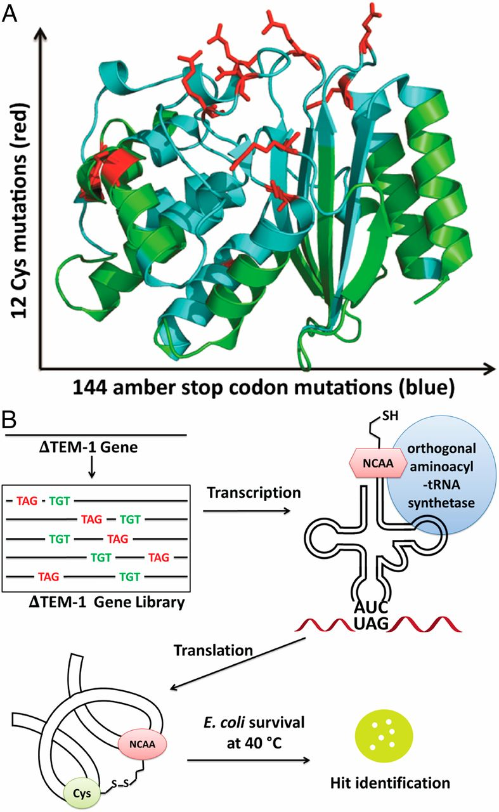
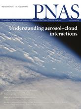
Disulfide bonds play an important role in protein folding and stability. However, the
cross-linking of sites within proteins by cysteine disulfides has significant distance and
dihedral angle constraints. Here we report the genetic encoding of noncanonical amino acids
containing long side-chain thiols that are readily incorporated into both bacterial and
mammalian proteins in good yields and with excellent fidelity. These amino acids can pair with
cysteines to afford extended disulfide bonds and allow cross-linking of more distant sites and
distinct domains of proteins. To demonstrate this notion, we preformed growth-based selection
experiments at nonpermissive temperatures using a library of random β-lactamase mutants
containing these noncanonical amino acids. A mutant enzyme that is cross-linked by one such
extended disulfide bond and is stabilized by ∼9 °C was identified. This result indicates that an
expanded set of building blocks beyond the canonical 20 amino acids can lead to proteins with
improved properties by unique mechanisms, distinct from those possible through conventional
mutagenesis schemes.
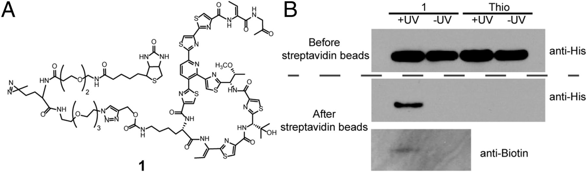
Thiopeptides are a subclass of ribosomally synthesized and posttranslationally modified peptides
(RiPPs) with complex molecular architectures and an array of biological activities, including
potent antimicrobial activity. Here we report the generation of thiopeptides containing
noncanonical amino acids (ncAAs) by introducing orthogonal amber suppressor aminoacyl-tRNA
synthetase/tRNA pairs into a thiocillin producer strain of Bacillus cereus .We demonstrate that
thiopeptide variants containing ncAAs with bioorthogonal chemical reactivity can be further
postbiosynthetically modified with biophysical probes, including fluorophores and
photo-cross-linkers. This work allows the site-specific incorporation of ncAAs into thiopeptides
to increase their structural diversity and probe their biological activity; similar approaches
can likely be applied to other classes of RiPPs.
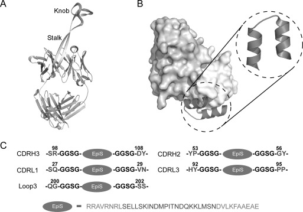
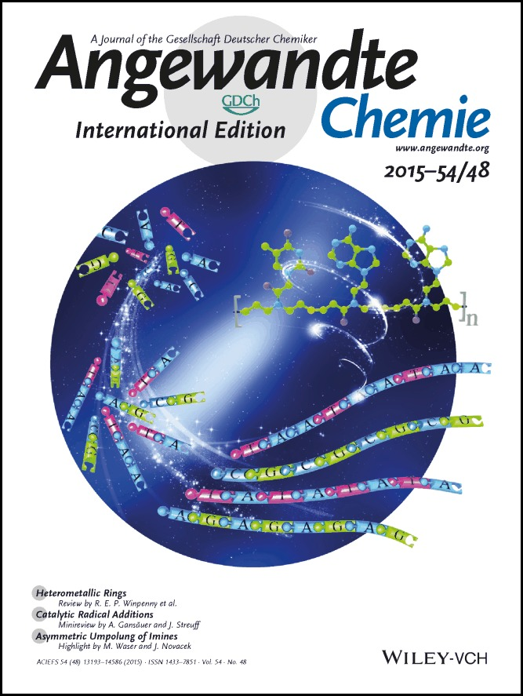
Respiratory syncytial virus (RSV) is a leading cause of lower respiratory tract infections in
children. We have generated an epitope-specific RSV vaccine by grafting a neutralizing epitope
(F-epitope) in its native conformation into an immunoglobulin scaffold. The resulting antibody
fusion exhibited strong binding affinity to Motavizumab, an RSV neutralizing antibody, and
effectively induced potent neutralizing antibodies in mice. This work illustrates the potential
of the immunoglobulin molecule as a scaffold to present conformationally constrained B-cell
epitopes.
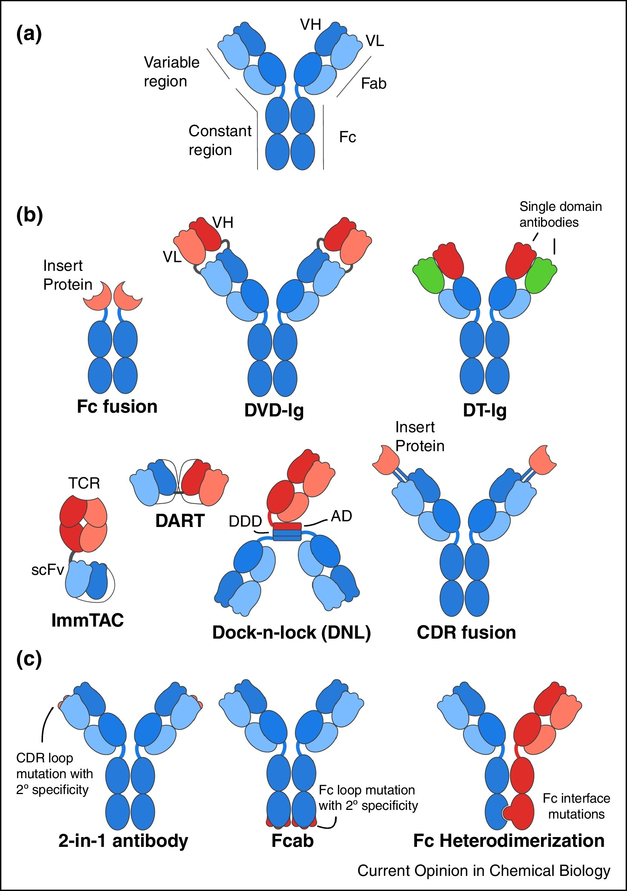
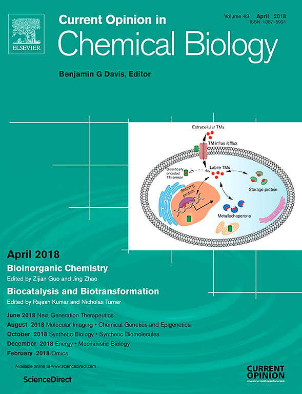
The field of therapeutic antibodies has been revolutionized over the past decade, led by the
development of novel antibody-modification technologies. Besides the huge success achieved by
therapeutic monoclonal antibodies, a diversity of antibody derivatives have emerged with hope to
outperform their parental antibodies. Here we review the recent development of methodologies to
modify immunoglobulin domains and their therapeutic applications. The innovative genetic and
chemical approaches enable novel and controllable modifications on immunoglobulin domains,
producing homogeneous therapeutics with new functionalities or enhanced therapeutic profiles.
Such therapeutics, including antibody-drug conjugates, bispecific antibodies, and antibody/Fc
fusion proteins, have demonstrated great prospects in the treatment of cancer, auto-immune
diseases, infectious diseases, and many other disorders.
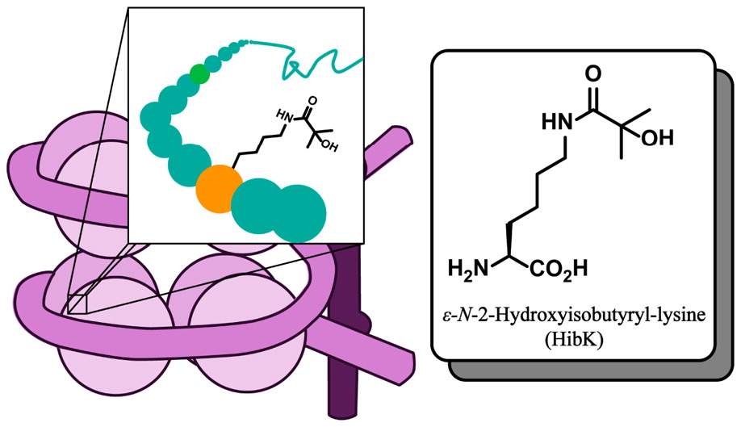

Here, we report the evolution of an orthogonal amber suppressor pyrrolysyl-tRNA synthetase
(PylRS)/tRNACUAPyl pair that genetically encodes the post-translationally
modified amino acid, ε-N-2-hydroxyisobutyryl-lysine (HibK), in bacteria and mammalian
cells. HibK is a new type of histone mark that is widely distributed in histone proteins. The
ability to site-specifically incorporate HibK into proteins provides a useful tool to probe the
biological function of this newly identified post-translational modification.
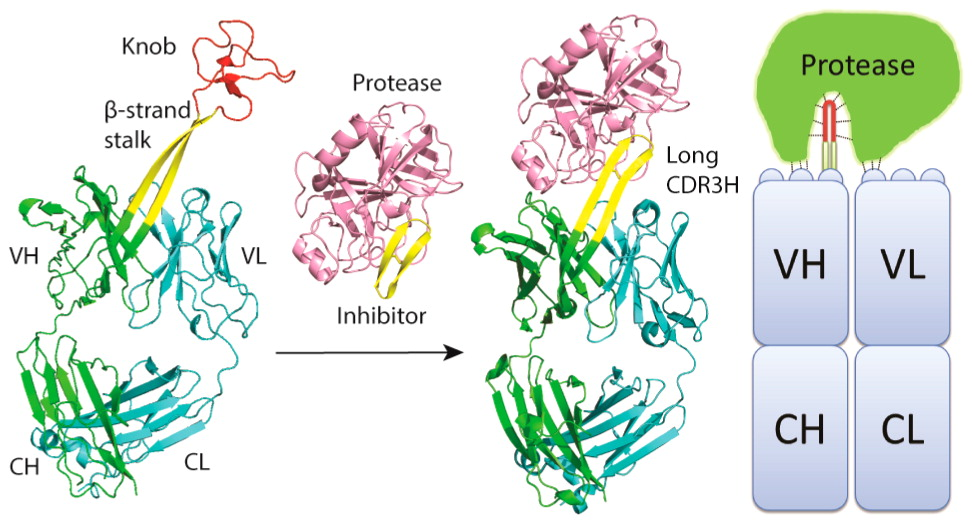
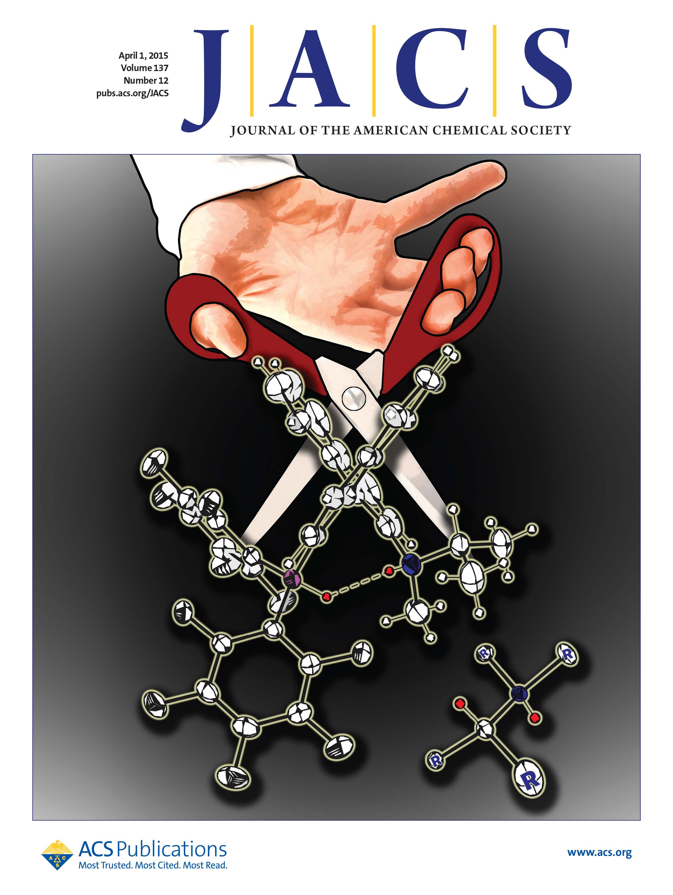
The bovine antibody BLV1H12, which has an ultralong CDR3H, provides a novel scaffold for
engineering new functions into the antibody's variable region. By modifying the β-strand
"stalk" of BLV1H12 with sequences derived from natural or synthetic protease inhibitors, we have
generated antibodies that inhibit bovine trypsin and human neutrophil elastase (HNE) with low
nanomolar affinities. We were also able to generate a humanized variant using a human
immunoglobulin scaffold that shares a high degree of homology with BLV1H12. Further optimization
yielded a highly selective humanized anti-HNE antibody with sub-nanomolar affinity. This work
demonstrates a novel strategy for generating antibodies with potent and selective inhibitory
activities against extracellular proteases involved in human disease.
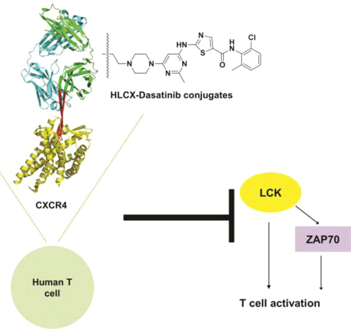
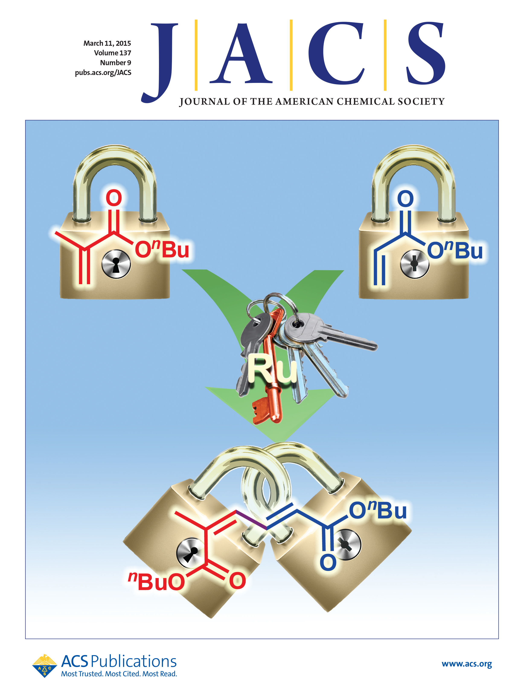
We have developed a novel antibody-drug conjugate (ADC) that can selectively deliver the Lck
inhibitor dasatinib to human T lymphocytes. This ADC is based on a humanized antibody that
selectively binds with high affinity to CXCR4, an antigen that is selectively expressed on
hematopoietic cells. The resulting dasatinib-antibody conjugate suppresses T-cell-receptor
(TCR)-mediated T-cell activation and cytokine expression with low nM EC50 and has minimal
effects on cell viability. This ADC may lead to a new class of selective immunosuppressive drugs
with improved safety and extend the ADC strategy to the targeted delivery of kinase inhibitors
for indications beyond oncology.
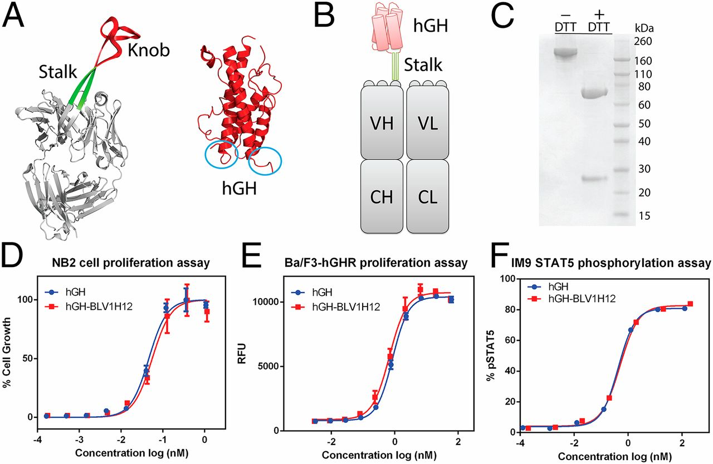
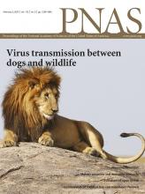
On the basis of the 3D structure of a bovine antibody with a well-folded, ultralong
complementarity-determining region (CDR), we have developed a versatile approach for generating
human or humanized antibody agonists with excellent pharmacological properties. Using human
growth hormone (hGH) and human leptin (hLeptin) as model proteins, we have demonstrated that
functional human antibody CDR fusions can be efficiently engineered by grafting the native
hormones into different CDRs of the humanized antibody Herceptin. The resulting Herceptin CDR
fusion proteins were expressed in good yields in mammalian cells and retain comparable in vitro
biological activity to the native hormones. Pharmacological studies in rodents indicated a 20-
to 100-fold increase in plasma circulating half-life for these antibody agonists and
significantly extended in vivo activities in the GH-deficient rat model and leptin-deficient
obese mouse model for the hGH and hLeptin antibody fusions, respectively. These results
illustrate the utility of antibody CDR fusions as a general and versatile strategy for
generating long-acting protein therapeutics.
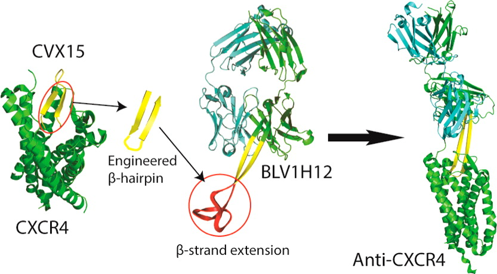
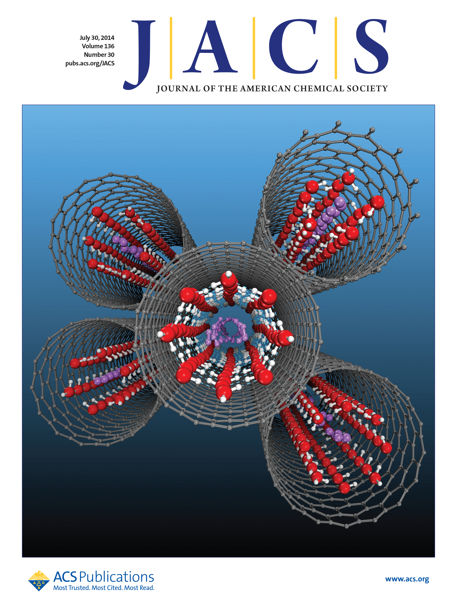
The bovine antibody (BLV1H12) which has an ultralong heavy chain complementarity determining
region 3 (CDRH3) provides a novel scaffold for antibody engineering. By substituting the
extended CDRH3 of BLV1H12 with modified CXCR4 binding peptides that adopt a β-hairpin
conformation, we generated antibodies specifically targeting the ligand binding pocket of CXCR4
receptor. These engineered antibodies selectively bind to CXCR4 expressing cells with binding
affinities in the low nanomolar range. In addition, they inhibit SDF-1-dependent signal
transduction and cell migration in a transwell assay. Finally, we also demonstrate that a
similar strategy can be applied to other CDRs and show that a CDRH2-peptide fusion binds CXCR4
with a Kd of 0.9 nM. This work illustrates the versatility of scaffold-based antibody
engineering and could greatly expand the antibody functional repertoire in the future.
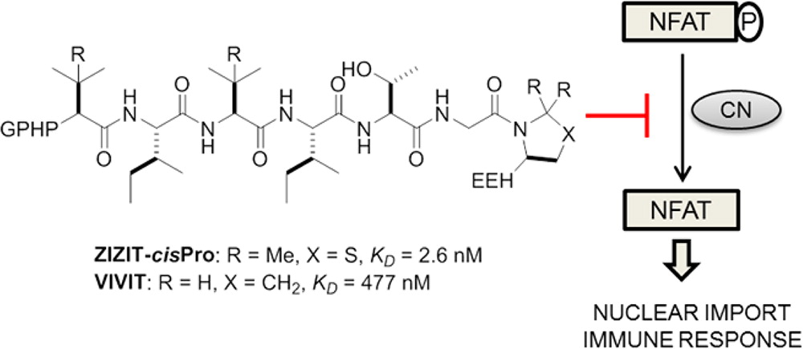
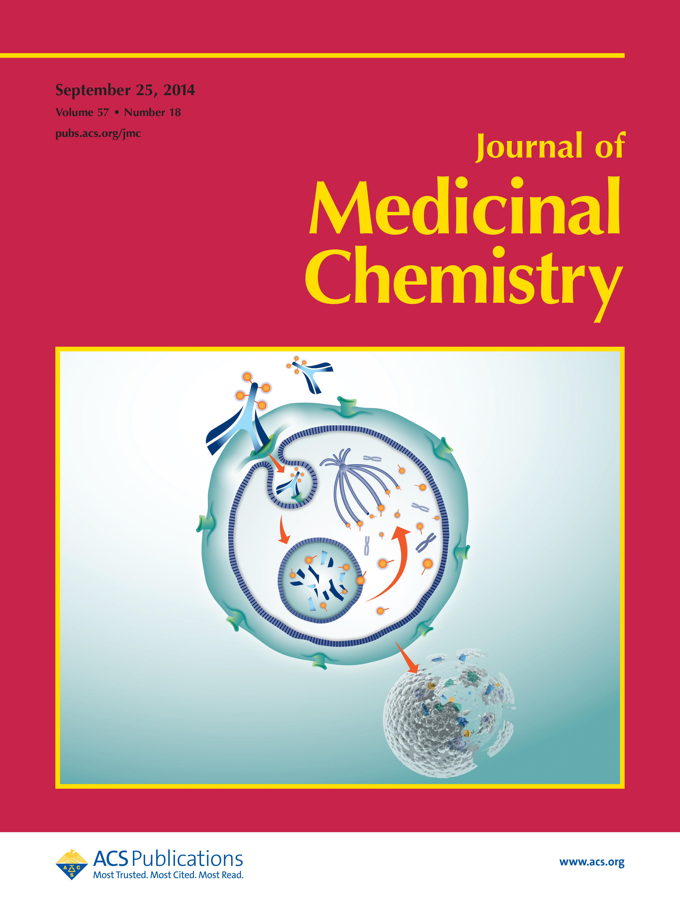
Calcineurin inhibitors such as cyclosporine A and FK506 are effective immunosuppressants but
produce severe side effects. Rational modification of a previously reported peptide inhibitor,
GPHPVIVITGPHEE (KD ∼ 500 nM), by replacing the two valine residues with
tert-leucine and the C-terminal proline with a cis-proline analogue, gave an
improved inhibitor ZIZIT-cisPro, which binds to calcineurin with a KD value of
2.6 nM and is more resistant to proteolysis.
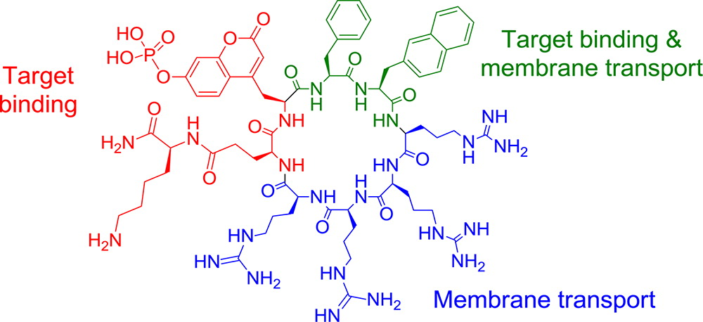
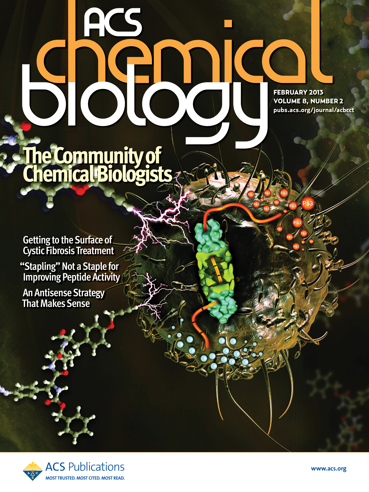
Cyclic peptides hold great potential as therapeutic agents and research tools, but their broad
application has been limited by poor membrane permeability. Here, we report a potentially
general approach for intracellular delivery of cyclic peptides. Short peptide motifs rich in
arginine and hydrophobic residues (e.g., FΦRRRR, where Φ is L-2-naphthylalanine),
when embedded into small- to medium-sized cyclic peptides (7-13 amino acids), bound to the
plasma membrane of mammalian cultured cells and were subsequently internalized by the cells.
Confocal microscopy and a newly developed peptide internalization assay demonstrated that cyclic
peptides containing these transporter motifs were translocated into the cytoplasm and nucleus at
efficiencies 2-5-fold higher than that of nonaarginine (R9). Furthermore,
incorporation of the FΦRRRR motif into a cyclic peptide containing a phosphocoumaryl
aminopropionic acid (pCAP) residue generated a cell permeable, fluorogenic probe for detecting
intracellular protein tyrosine phosphatase activities.
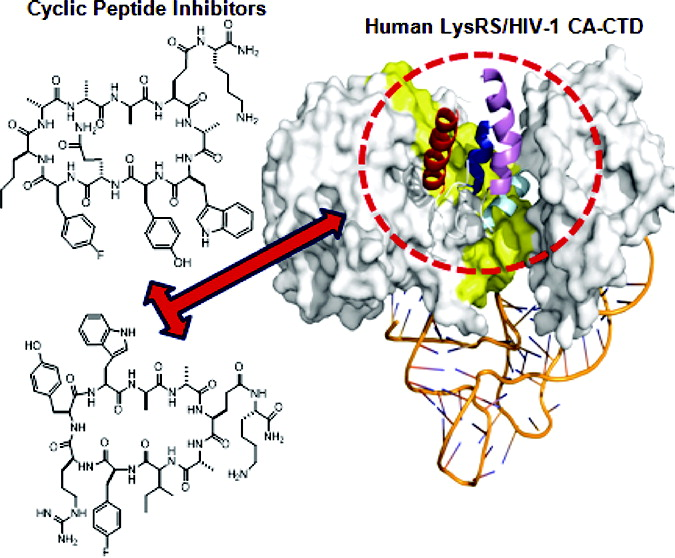

The human immunodeficiency virus type 1 (HIV-1) capsid protein (CA) plays a critical role in the
viral life cycle. The C-terminal domain (CTD) of CA binds to human lysyl-tRNA synthetase
(hLysRS), and this interaction facilitates packaging of host cell tRNALys,3, which
serves as the primer for reverse transcription. Here, we report the library synthesis,
high-throughput screening, and identification of cyclic peptides (CPs) that bind HIV-1 CA.
Scrambling or single-residue changes of the selected peptide sequences eliminated binding,
suggesting a sequence-specific mode of interaction. Two peptides (CP2 and CP4) subjected to
detailed analysis also inhibited hLysRS/CA interaction in vitro. Nuclear magnetic
resonance spectroscopy and mutagenesis studies revealed that both CPs bind to a site proximal to
helix 4 of the CA-CTD, which is the known site of hLysRS interaction. These results extend the
current repertoire of CA-binding molecules to a new class of peptides targeting a novel site
with potential for development into novel antiviral agents.
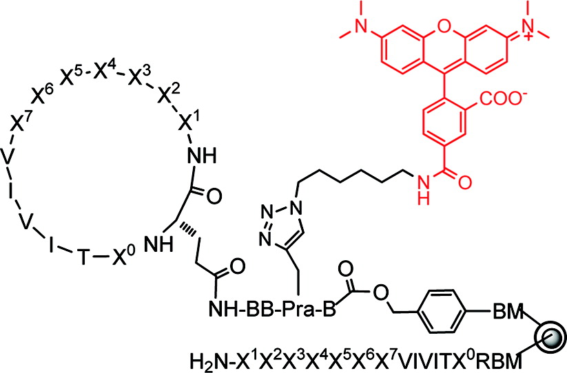
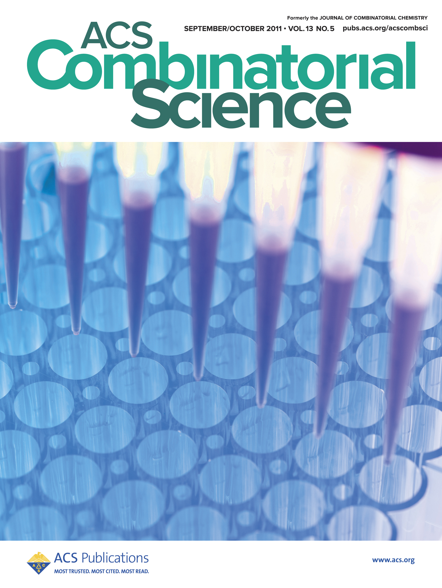
One-bead-one-compound (OBOC) libraries provide a powerful tool for drug discovery as well as
biomedical research. However, screening a large number of beads/compounds (>1 million) and rank
ordering the initial hits (which are covalently attached to a solid support) according to their
potencies still post significant technical challenges. In this work, we have integrated some of
the latest technical advances from our own as well as other laboratories to develop a general
methodology for rapidly screening large OBOC libraries. The methodology has been applied to
synthesize and screen a cyclic peptide library that features: (1) spatially segregated beads
containing cyclic peptides on the surface layer and linear encoding peptides in their interior;
(2) rapid on-bead screening of the library (>1 million) by a multistage procedure (magnetic bead
sorting, enzyme-linked assay, and fluorescence based screening); (3) selective release of cyclic
peptides from single positive beads for solution-phase determination of their binding
affinities; and (4) hit identification by partial Edman degradation/mass spectrometry (PED/MS).
Screening of the library against protein phosphatase calcineurin (Cn) identified a series of
cyclic peptides that bind to the substrate-docking site for nuclear factor of activated T cells
(NFAT) with KD values of ∼1 μM. Further improvement of the affinity and
specificity of these compounds may lead to a new class of immunosuppressive agents that are more
selective and therefore less toxic than cyclosporine A and FK506.
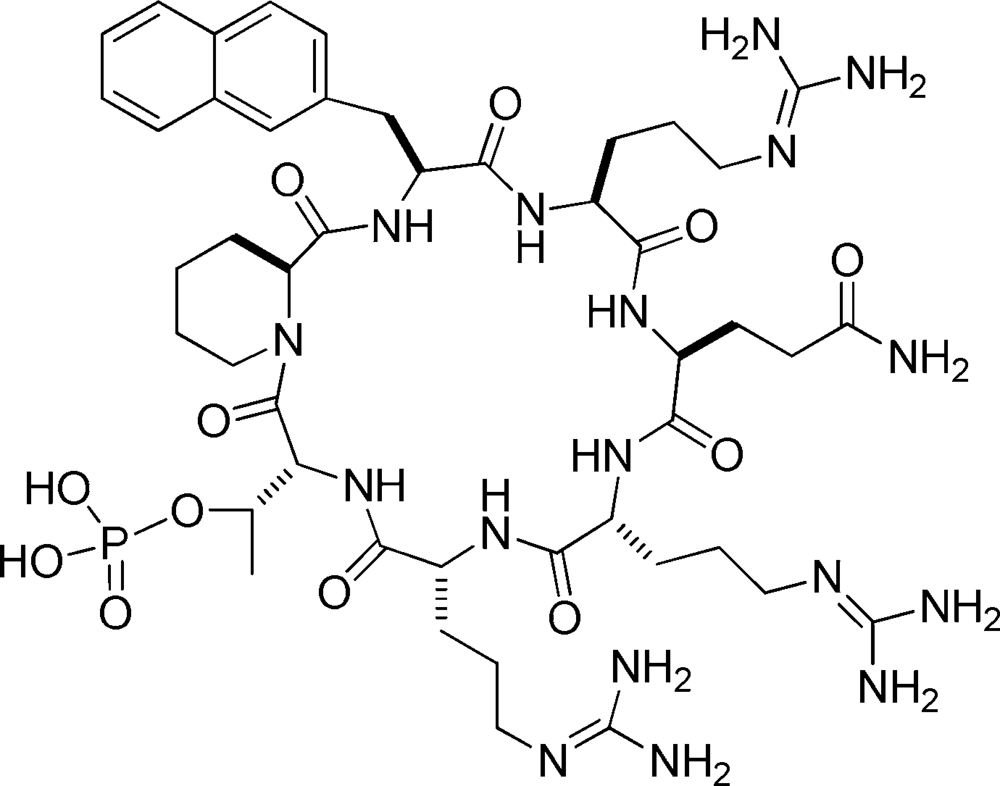
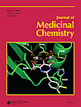
Peptidylprolyl isomerase Pin1 regulates the function and/or stability of phosphoproteins by
altering the conformation of specific pSer/pThr-Pro peptide bonds. In this work, a cyclic
peptide library was synthesized and screened against the catalytic domain of human Pin1. The
selected inhibitors contained a consensus motif of D-pThr-Pip-Nal (where Pip is
L-piperidine-2-carboxylic acid and Nal is L-2-naphthylalanine).
Representative compounds were tested for binding to Pin1 by isothermal titration calorimetry and
inhibition of Pin1 activity, and the most potent inhibitors had KD (and
KI) values in the low nanomolar range. Treatment of breast cancer cells with
the inhibitors, which were rendered membrane permeable by attachment of an octaarginine
sequence, inhibited cell proliferation and increased the protein levels of two previously
established Pin1 substrates, PML and SMRT. Finally, a second generation of cell permeable Pin1
inhibitors was designed by replacing the noncritical residues within the cyclic peptide ring
with arginine residues and shown to have antiproliferative activity against the cancer cells.
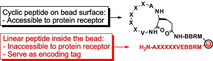
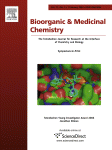
Prolactin receptor is involved in normal lactation and reproduction; however, excessive
prolactin levels can cause various reproductive disorders such as prolactinomas. Small-molecule
antagonists against the human prolactin receptor (hPRLr) thus have potential clinical
applications and may serve as useful molecular probes in biomedical research. In this work, we
synthesized a large, support-bound cyclic peptide library (theoretical diversity of
1.2x107) on 90-μm TentaGel beads and screened it against the extracellular domain
of hPRLr. To facilitate hit identification, each TentaGel bead was spatially segregated into
outer and inner layers, with a cyclic peptide displayed on the bead surface while the bead
interior contained the corresponding linear peptide. The identity of a positive bead was
revealed by sequencing the linear encoding peptide within the bead by partial Edman
degradation/mass spectrometry. Screening of the library resulted in 20 hits, two of which were
selected for further analysis and shown to bind to hPRLr with dissociation constants of 2-3 μM.
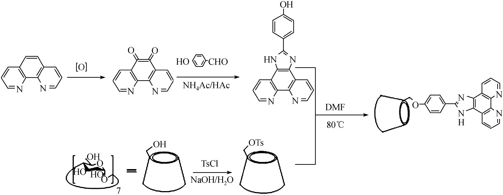
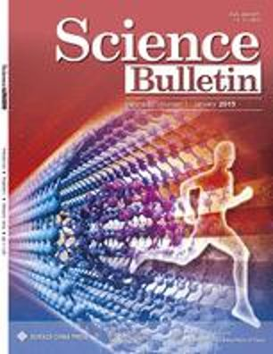
A host type non-virus gene delivery carrier, phenanthroline-β-cyclodextrin derivative host
molecule, was produced which can be used as molecular probe. Interactions between DZY-1 and DNA
were investigated by electrophoresis assay. Hind III enzyme inhibition assay was carried
out using DNA condensates induced by host molecules or host-guest molecule complexes to explore
their ability to inhibit enzyme digestion. Micro-structure of DNA condensates induced by host
molecules and host-guest molecule complexes was observed by scanning electron microscope (SEM).
Our work indicates the delivery mechanism of DZY-1 used as a gene delivery carrier and also
provides a method to design and produce non-virus gene delivery carriers.
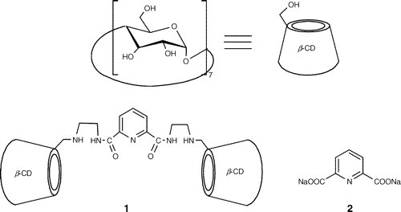
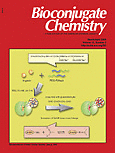
Bridged bis(β-cyclodextrin) 1 with a pyridine-2,6-dicarboxamide linker was
synthesized, and its inclusion complexation behavior with some aliphatic oligopeptides was
investigated in aqueous buffer solution of pH 2.0 and 7.2 at 25 degrees C by means of circular
dichroism, fluorescence, and 2D NMR techniques. The results show that the resulting inclusion
complexes of 1 with oligopeptides adopt a cooperative "cyclodextrin-guest-cyclodextrin" sandwich
binding mode in a neutral media, but a "guest-linker-cyclodextrin" coinclusion binding mode in
an acidic media. These switchable binding modes consequently rationalize the binding ability of
bis(β-cyclodextrin) 1 at different pH values; that is, 1 shows the stronger
association with oligopeptides in a neutral media. Because of the simultaneous contributions of
hydrophobic, hydrogen bond, and electrostatic interactions, bis(β-cyclodextrin) 1
affords length-selectivity up to 4.7 for the Gly-Gly/Gly-Gly-Gly pair at pH 2.0 and
sequence-selectivity up to 4.2 for the Gly-Leu/Leu-Gly pair at pH 7.2. These phenomena are
discussed from the viewpoint of the size-fit concept and the multipoint recognitions between
host and guest.